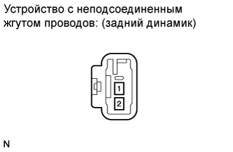

ДИНАМИК В НАРУЖНОЙ ОБЛИЦОВОЧНОЙ ПАНЕЛИ (для 3-дверных моделей) > ПРОВЕРКА |
| 1. ПРОВЕРЬТЕ ЗАДНИЙ ДИНАМИК |
|  |
Измерьте сопротивление в соответствии со значениями, приведенными в таблице.
| Контакты для подключения диагностического прибора | Режим | Заданные условия |
| 1 - 2 | Всегда | 4 Ом |